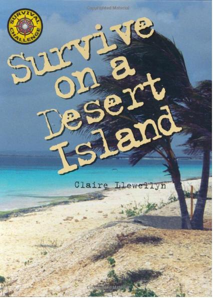
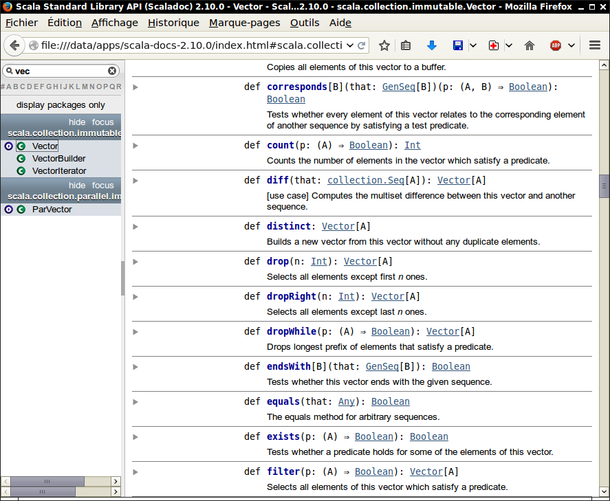

Copyright © Cay S. Horstmann 2014 
This work is licensed under a Creative Commons Attribution 4.0 International License
if (booleanExpression) expression1 else expression2
val y = (if (x >= 0) 2 else 0) - 1
? : in C++val z = if (condition) 3 else "Hello" // type is Any
else yields a value of type Unit if condition is false (like void in C++)v(i)Vector.fill(n)(e) yields a new vector with n copies of e val v = Vector.fill(10)("Bonjour")v.updated(i, e) yields a new vector with e at position ival v2 = v.updated(9, "Adieu")
map
v2.map(s => s.toLowerCase)
fill
Vector.fill(10)(math.random)
Vector.iterate(s, n)(f) computes the vector with elements s, f(s), f(f(s)), ...
Vector.iterate("Bonjour", 8)(s => s.drop(1))"Fred".toVector.map(c => 'a' <= c && c <= 'z')
Vector('F', 'r', 'e', 'd')Vector('r', 'e', 'd')Vector(false, true, true, true)
val scores = Map("Alice" -> 10, "Bob" -> 3, "Cindy" -> 8)val alicesScore = scores("Alice")
// They don't call it a map for nothing
val fredsScore = scores.getOrElse("Fred", 0)val newScores = scores + ("Bob" -> 10, "Fred" -> 7)
val newerScores = newScores - "Alice" // Remove key and value
val myFirstTuple = (1, 3.14, "Fred")
(Int, Double, String)_1 (!), _2, _3
val second = myFirstTuple._2
val (first, second, _) = myFirstTuple
-> operator makes pairs. "Alice" -> 10 is the same as ("Alice", 10)scores.map(p => (p._2, p._1))
scores.map(p => { val (x, y) = p; (y, x) })
// Can't destructure parameter directly
result......where
val words = "Mary had a little lamb".split(" ").toVector
val result = words.map(w => w -> w.length).toMap
Vector[(String, Int)]Vector[String => Int]Map[String, Int]
apply is the () operator, unary_- is what you think it is.GenSeq? TraversableLike? FilterMonadic??? Just think “some stuff for collections” and move on.implicit means there is an automatic conversion. Ignore.RichInt, RichDouble, StringOps for numbers and stringsscala.math
Day2. Paste in
if (math.random > 0.5) "Bonjour" else "Adieu"and save. What do you get?
(n, 0) if n is positive and (0, -n) if n is negative. Test with -10.to(10).x > 0 , 0 if x equals 0, and -1 if x < 0. Complete val sign = ... and then call -10.to(10).map(sign).def in the preceding assignment."Fred"(2)? Why?"Free"? That is, what call yields a new string with characters 'F' 'r' 'e' 'e'? (Hint: Don't use substring, but look at the title of the slide.)"Bonjour".rev and hit Ctrl Space. What happens?1.to(10). What happens?distinct work with strings? What does it do? Give an example.map? Give an example.StringOps.val words = io.Source.fromFile("/usr/share/dict/words").getLines().toVector
(If you get an exception that you don't have /usr/share/dict/words, then first save the contents of this link somewhere and change the location to something like "C:\\Users\\Yourname\\Downloads\\words.txt".)filter.) ==.1 -> 2 -> 3? What is the type of the result?flatten that takes such a thing and turns it into an (Int, Int, Int). Use _1, _2val x,y,z = (1,2,3)
groupBy. What is words.groupBy(w => w.length)?myMap('a') yields all words that start with the letter a and so on.myMap.map(...)sorted doesn't work because Scala doesn't know how to sort the tuples. There are two other sort methods. One of them wants a function that maps into something that Scala does know how to sort—the easy choice for solving this exercise.Do this as individual work, not with your partner
When all done, email the signed zip files to Fatemeh.Borran@heig-vd.ch